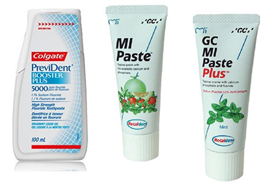

Module: Mouth and Teeth Care
Janet L. Poole, PhD, OTR/L with input from David M. Leader, DMD, MPH
Dental Care
Brush and floss the teeth regularly
- Use a child size toothbrush
- Use a floss aid such as the Reach Access Flosser
- Get regular dental checkups
Keep the mouth moist, as saliva cleans the teeth
- Drink plenty of fluids throughout the day
- Carry a water bottle with you; plastic squirt bottles may be easy to manipulate
- If you can, chew sugarless gum and/or suck on sugar-free hard candy to stimulate saliva production. It is best to use the sweetener Xylitol.
Ask the dentist for advice on saliva substitutes that increase the flow of saliva, such as Salivart, Optimoist, Oasis, or Salix lozenges, available at most drugstores.
- Prescription fluoride toothpaste such as Prevident 5000 Booster Plus.
- Calcium paste such as MI Paste Plus (includes fluoride) or MI Paste (no fluoride). Leave this paste on overnight. It is available to purchase online with a prescription. www.healthwarehouse.com 
- Caphosol calcium/phosphate rinse is available by prescription.
- Ask your doctor about medications, such as Salagen® (pilocarpine) and Evoxac® (cevimeline).